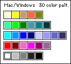
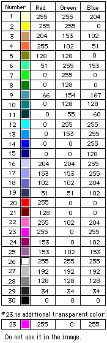
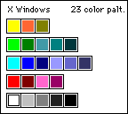
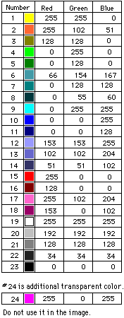
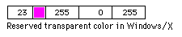

Color Palette for Netscape Communicator
Client UI group,
Netscape Communications Corp.
Date created: 03/17/96
Date modified: 02/18/98
The color palettes described below apply to the visual design of Netscape
Communicator 4.0x and after.
Windows
Mac
Unix
Photoshop
.act files
Design Principles:
1. The customer palette should have only minimum number of
colors in order to reserve the maximum colors for the content display of
main window.
2. The customer palette should contains only most effective colors for
visual design purpose.
3. The customer palette should work well not only for icons in the application,
but also for the branding animation images if any.
4. The customer palette should support the best visual look and create
similar visual effects among three platforms.
Palette for Windows
This palette contains 30 colors for Windows platforms. The palette will
provide good color mix for the creation of icon images in the Navigator,
while it will still allow the Navigator to allocate 226 color for the content.

RGB value for Windows Color Palette (under 8 bit display)

Transparent Color for Windows
In Windows platform, this color can only be used for the transparent mask
during icon production. It is strongly recommended that you don't use this
color in the actual image for visual design effect.
Palette for Mac
In original design for Communicator 4.o, Mac platform was designed
to use the same palette as the Windows platform's. However, due to some
technical constrictions, the Mac platform uses Mac system color palette
that provide by Apple for the icon design and production. You can find
such color palette in Mac resource program.
Palette for X
This palette contains 23 colors for Unix platform. Since X platform is
more sensitive to the color allocation with each open window on screen,
the design concept is to use minimum color numbers in this palette, while
maintain acceptable consistency with Mac and Windows. It matches the current
color numbers of X platform (Icon colors 23 + Motif UI colors 16 + Image
colors 216). The palette will provide good color mix for the creation of
icon images in the Navigator, while it will still allow the Navigator to
allocate 216 color for the content.

RGB value for X color palette (under 8 bit display)

Transparent color for X

Unix platform uses 23 color palette shown above for Communicator 4.0 icon
images. The color # 23 is an additional color that is reserved from the
remaining 216 color cube. This color is not in the 23 color palette for
the actual visual design. However, this color is used in all the icon production
process as transparent color, which means in the source code, this color
is recognized as transparent color for all icon images.
Photoshop
.act files for Mac, Windows, and Unix platform.
Photoshop .act file for Mac
Photoshop .act file for Windows
Photoshop .act file. for Unix